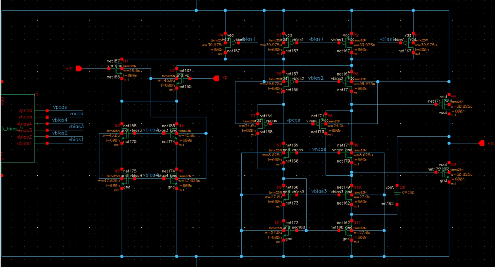

Analog & mixed-signal
Amplifiers, biasing, feedback, and voltage regulation.
ANALOG FIRST. SYSTEMS IN VIEW.
I’m Ruthvik, an electrical engineering graduate student at ASU. My interests center on analog and mixed-signal IC design, with project work spanning transistor-level circuits, RTL, and physical design.

Where the design begins ↗ 02 / ROUTED LAYOUT ↗
02 / ROUTED LAYOUT ↗
Schematics. Simulation. Implementation.
WHERE I FOCUS
Amplifiers, biasing, feedback, and voltage regulation.
CMOS logic, RTL, synthesis, and layout.
Self-checking testbenches, assertions, and coverage.
SELECTED WORK
Each case study explains the problem, approach, contribution, and what the results actually show. Selected projects include an illustrated brief to download.
Explore the project library →CIRCUITS & SYSTEMS
From transistor-level analog circuits to RTL, verification, and earlier system prototypes. Open a project for the engineering decisions and supporting results.
Try a tool name, another discipline, or a broader topic.
THE FOUNDATION
Electrical engineering studies with a focus on integrated circuits and the design flow from transistor-level implementation to verification.
ARIZONA STATE UNIVERSITY
Analog IC design, advanced analog IC design, VLSI design, digital system circuits, and digital verification.
MANIPAL INSTITUTE OF TECHNOLOGY
Explore my academic background, design projects, and internship experience in the analog resume.
Download resume ↓START A CONVERSATION
Connect with me about analog and mixed-signal IC design, digital design, or engineering projects.